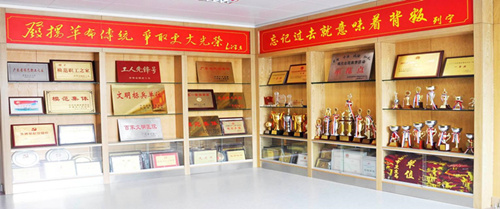
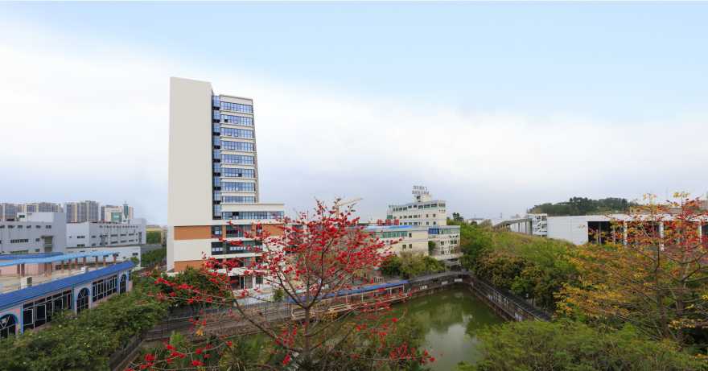
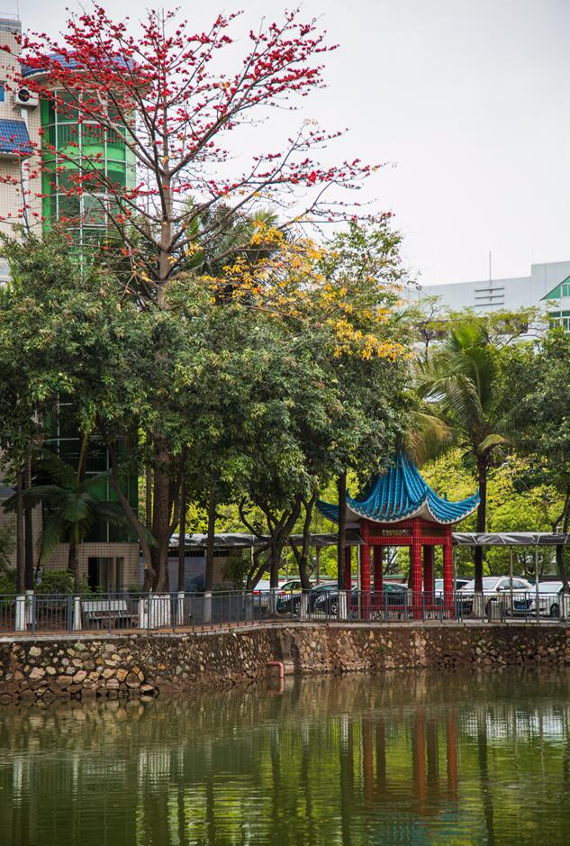
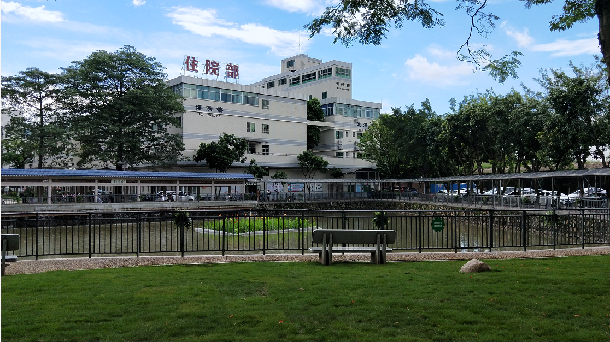
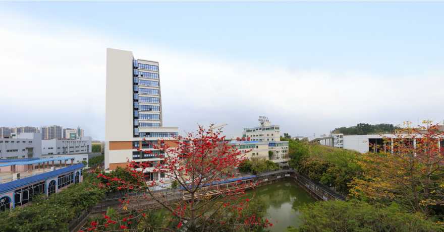
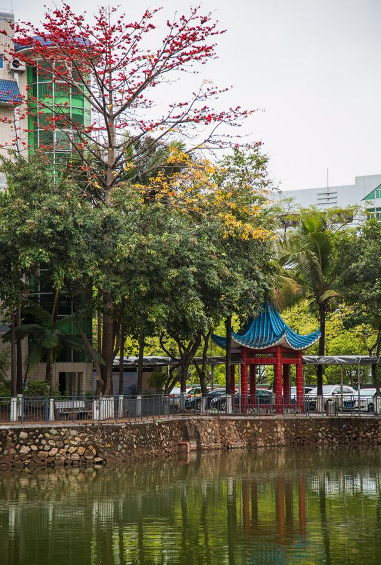
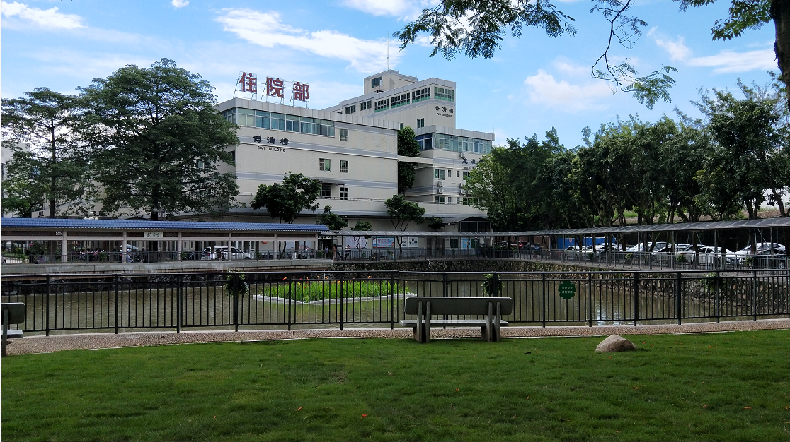

预约服务咨询电话:0769-8611335
服务改进电话:0769-86118320 (邮箱dgdbrmyy@yeah.net)
院长信箱:hsz86118320@163.com
预约服务咨询电话:0769-8611335
服务改进电话:0769-86118320 (邮箱dgdbrmyy@yeah.net)
院长信箱:hsz86118320@163.com

东莞市第八人民医院（东莞市儿童医院）是按三甲标准建设的“大专科、精综合”型医院，是广东省三大儿童医院之一、广东医科大学非直属附属医院、广东省博士工作站、中山大学博士后创新实践基地、广东省新生儿护理抢救分中心、东莞市儿童危重症救治中心、东莞市危重症新生儿救治中心、海峡两岸新生儿医学研究与培训基地（华南）、国家住院医师规范化培训协同基地，附设东莞市儿科研究所，正积极筹建东莞市儿童医院松山湖院区（儿童医学中心）。先后被评为全国卫生系统“先进集体”、全国“职工教育培训示范点”，荣获全国“五一劳动奖状”、全国“工人先锋号”、全国“敬老文明号”、中国医院竞争力排行榜儿童医院50强、粤港澳大湾区最佳医院80强等称号。
医院在岗员工1551人，高级专业技术人才228人，其中正高70人，副高158人，拥有硕士研究生以上学历138人，硕士、博士研究生导师27人，岭南名医19人。医院占地面积120亩，现有院本部和骨科分院2个院区，共设有40多个临床及医技专业科室，编制床位1428张，2019年门急诊128.13万人次，出院5.33万人次。
医院设有较齐全的各儿童专科及成人专科，拥有省级（高校）重点、特色专科（实验室）4个，市级重点、特色专科（实验室）8个，其中骨科是广东省特色专科，儿科、骨科是广东医科大学重点学科，新生儿科、儿童重症医学科、中医骨伤科、儿科、小儿外科、检验科是东莞市临床重点专科，ICU是东莞市临床特色专科。 东莞市儿科研究所是广东省博士工作站、省呼吸医学工程实验室、广东医科大学重点实验室、东莞市重点实验室，拥有博士后、硕士研究生20余人，是针对儿科疾病发病机理、预防、诊断、治疗为一体的儿科医学研究机构，开展儿童遗传性疾病、出生缺陷、肿瘤和感染性疾病等基础及临床研究，开设儿童罕见病门诊、基因检测门诊。 医院配备了科学研究型西门子双源CT机、磁共振成像系统（MRI）、数字减影血管造影系统（DSA）、体外膜肺氧合（ECMO）、德国连续性血液净化机、移动式数字化医用X射线摄影系统、进口小儿专用胃镜及支气管镜、24小时动态脑电图、四维彩超、经颅多普勒（TCD）、超高效液相色谱串联质谱系统、荧光原位杂交及染色体分析显微图像系统、微陈列基因芯片分析系统等先进设备，能为患者提供及时有效的辅助诊疗服务
医院遵循“明德、敬业”院训，紧抓人才和学科建设，牢牢把握医疗质量和安全，以人民健康为中心，以员工价值实现为根本，树立了“温暖救护、简约诊疗”的品牌，确立了专科诊疗的行业地位，服务质量和服务能力稳步提升，病源辐射周边省市。东莞市第八人民医院（东莞市儿童医院）将围绕建设精益化温暖医院的发展愿景，着力“三中心一基地”建设，高标准规划建设松山湖院区（儿童医学中心），走“强专科、精综合、高品质”的现代化医院发展之路，为建设“湾区都市，品质东莞”作贡献。
1958年，医院诞生──石龙镇卫生所
1996年，成功创建二级甲等医院
2002年，成为广东省普通高等医学院校教学医院
2009年，成为广东医学院的附属医院
2011年，成立东莞市儿科研究所；成为中山大学博士后创新实践基地
2013年，荣获全国五一劳动奖状；经东莞市人民政府同意在原院址的基础上组建三级甲等专科医院──东莞市儿童医院
2014年，更名为东莞市第八人民医院，正式启用东莞市儿童医院名称
2015年，隶属关系调整为市属医院； 纳入市属三级医院管理；党总支升格为党委
2018年，儿科研究所获批为广东省博士工作站
医院先后被中华全国总工会授予“全国模范职工之家”、“全国职工教育培训示范点”、“全国五一劳动奖状”，被全国老龄工作委员会授予全国“敬老文明号”；被省授予“广东省先进集体”、“先进职工之家”、“五一劳动奖状”、职工职业道德建设“先进位”、“百家文明医院”、“模范职工之家”、“巾帼文明示范岗”；被市委市政府授予“先进基层党组织”、“模范集体”、“文明单位”、“先进单位”、“青年文明岗”、“巾帼文明示范岗”、“园林式单位”，并被定为市“爱国守法诚信知礼”现代公民教育的十个示范点之一

 







订阅号

服务号
 儿童医院地址:东莞市石龙西湖三路(南)68号
儿童医院地址:东莞市石龙西湖三路(南)68号
第八人民医院地址:东莞市石龙西湖三路(南)68号
骨科医院地址:东莞市西湖中路同济楼
儿科研究所地址:东莞市石龙西湖三路(南)68号
 监督电话:0769-86118320
监督电话:0769-86118320